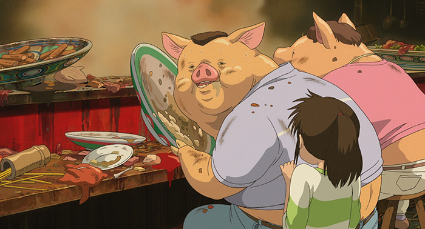
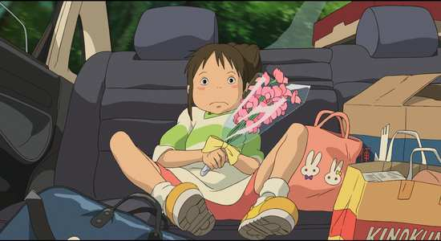
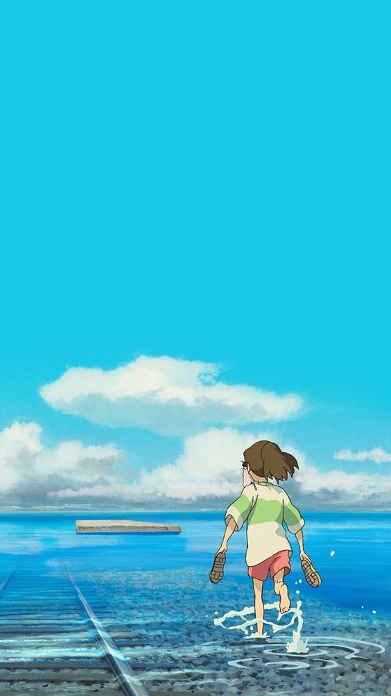

Winner of the Academy Award® for Best Animated Feature, Hayao Miyazaki’s wondrous fantasy adventure is a dazzling masterpiece from one of the most celebrated filmmakers in the history of animation.
Designed as a very special coming-of-age tale, Spirited Away tells the story of Chihiro, a 10-year-old girl who navigates the labyrinths of life in a mystical microcosm inhabited by ancient spirits. Over the course of her journey in this alternate world, Chihiro learns valuable lessons about the fundamental nature of the universe as well as the importance of friendship. Through the use of soft world-building, Miyazaki constructs a memorable heterotopic environment that is infinitely nuanced and densely packed with mysterious entities that we don't quite know or understand. These magical creations linger on in our minds long after the film is over, shaping our own memories of the indelible experience of witnessing Miyazaki's mastery.
Miyazaki wanted a movie that was made for regular ten-year-olds. The main character had to be ordinary, with no special abilities or traits. The girls needed someone human to relate to and show them that they could be heroines too. The main character, Chihiro, was made with the girls from the cabin in mind. “Every time I wrote or drew something concerning the character of Chihiro and her actions, I asked myself the question whether my friend's daughter or her friends would be capable of doing it,” Miyazaki explained.
Quiet scenes of inaction, where a character might glance off into the distance or sit quietly, are a common occurrence in Miyazaki’s films. In an interview with Roger Ebert, Miyazaki explained the usefulness of these. "If you just have non-stop action with no breathing space at all, it's just busyness, But if you take a moment, then the tension building in the film can grow into a wider dimension. If you just have constant tension at 80 degrees all the time you just get numb."
